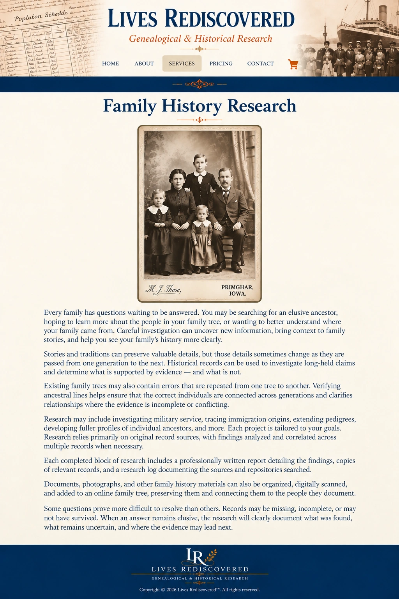

Family History Research

Every family has questions waiting to be answered. You may be searching for an elusive ancestor, hoping to learn more about the people in your family tree, or wanting to better understand where your family came from. Careful investigation can uncover new information, bring context to family stories, and help you see your family’s history more clearly.
Stories and traditions can preserve valuable details, but those details sometimes change as they are passed from one generation to the next. Historical records can be used to investigate long-held claims and determine what is supported by evidence—and what is not.
Existing family trees may also contain errors that are repeated from one tree to another. Verifying ancestral lines helps ensure that the correct individuals are connected across generations and clarifies relationships where the evidence is incomplete or conflicting.
Research may include investigating military service, tracing immigration origins, extending pedigrees, developing fuller profiles of individual ancestors, and more. Each project is tailored to your goals. Research relies primarily on original record sources, with findings analyzed and correlated across multiple records when necessary.
Each completed block of research includes a professionally written report detailing the findings, copies of relevant records, and a research log documenting the sources and repositories searched.
Documents, photographs, and other family history materials can also be organized, digitally scanned, and added to an online family tree, preserving them and connecting them to the people they document.
Some questions prove more difficult to resolve than others. Records may be missing, incomplete, or may not have survived. When an answer remains elusive, the research will clearly document what was found, what remains uncertain, and where the evidence may lead next.